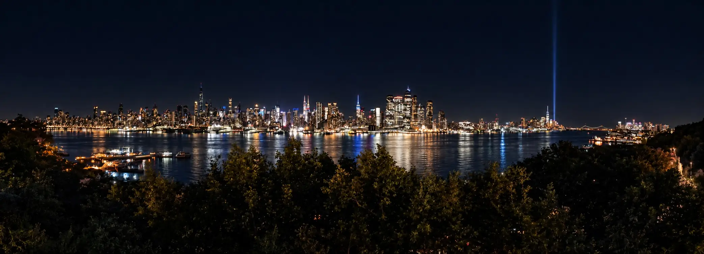

Torna alla Home
ENGLISH

New York
Diario di viaggio · Agosto–Settembre 2023
The City That Never Sleeps
Scrivimi in privato
Domande sui viaggi o suggerimenti.
→
Firma il Guestbook
Lascia un saluto visibile a tutti.
→
↑ Torna all'inizio
⌂ Torna alla Home
×